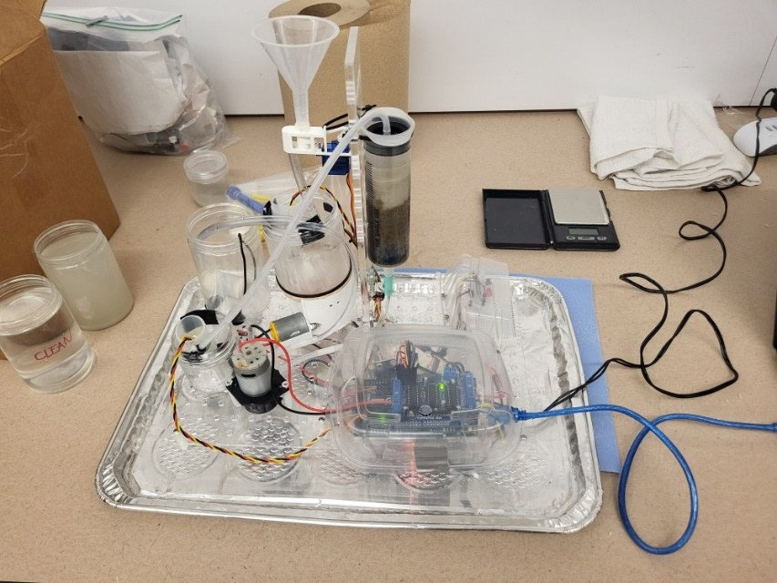
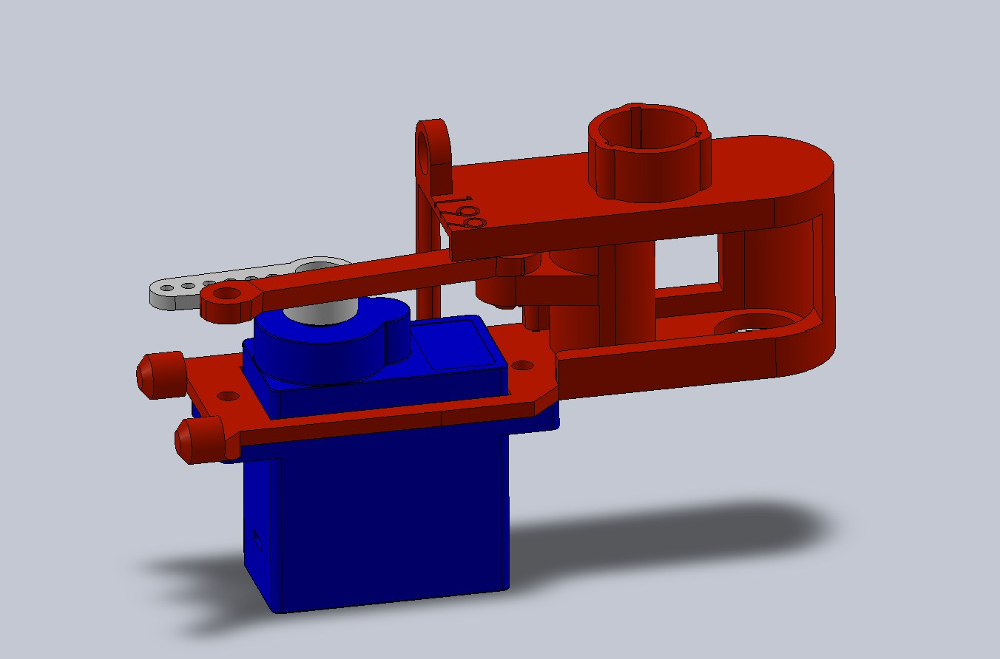
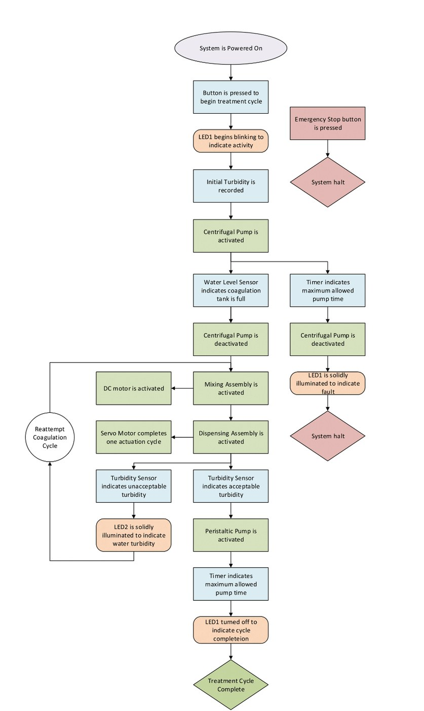
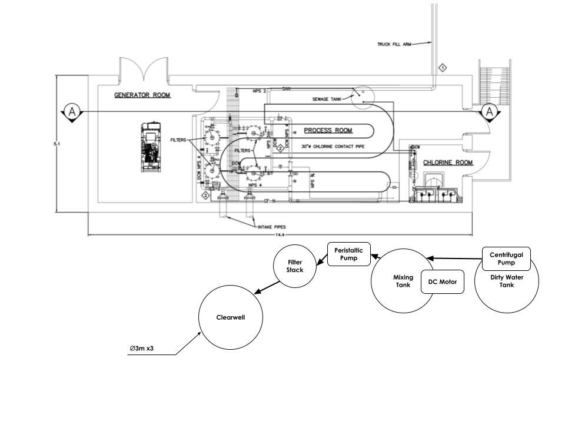

Scale Water Treatment System

A design-course project run as a real client brief: the fictional Nunavut community of "Awesome" faces turbidity spikes (up to 275 NTU) that exceed what its existing treatment plant can process. Team TastyWaterEng designed, built, and tested a small-scale automated water pre-treatment prototype -- coagulation, flocculation, sedimentation, and filtration -- to knock turbidity down before it reaches the existing plant, then used the prototype's results to size a full-scale 17,000 L version.
My Role: Dispensing Assembly
Three teammates independently designed competing dispensing assemblies to dose 0.8 g of aluminum sulfate (alum) coagulant per cycle. Mine linearizes a 9g servo's rotation into a sliding carrier that shuttles the alum from the intake funnel to the output hole and back -- four parts (body, alum carrier, servo, connecting rod), chosen for using the least 3D-printing filament of the three designs. It was selected as the final design for the prototype after proving the most reliable of the three in testing.


I also wrote the Executive Summary, the Prototype section, the full-scale Water Quality & Quantity analysis, and the team performance review in the team's final report.
System Overview
A single button press starts the cycle: a centrifugal pump transfers ~250 mL of water into the coagulation tank, the dispensing assembly doses the alum, a magnetically-coupled mixing bar agitates it to encourage flocculation, the mixture settles, and a peristaltic pump pushes the clarified water through a sponge/coarse-sand/fine-sand filter stack into a clean water tank -- with turbidity sensors reading before and after. A second button press at any time triggers an immediate emergency stop.

Mixing Assembly
Stirring is fully contactless: a 3D-printed mixing bar carrying two neodymium magnets floats in the coagulation tank and spins in phase with magnets on a motor-driven mount below, through a 40:1 worm-gear reduction -- so the tank never needs a shaft seal or a hole that could leak. Teammates Xander Brooks (gearbox) and Skander Haddad-Bouzayen (mixing bar) designed this subsystem.
Firmware
An Arduino runs the whole cycle as a blocking state machine -- start pump (14s timeout) → dispense alum (servo sweep) → mix (3 min, sampling the mixing-tank turbidity sensor every second) → settle (3 min) → peristaltic pump (75s, sampling the clean-tank sensor) -- with an interrupt-driven e-stop button checked throughout every stage that immediately halts all pumps/motors and holds the servo in place.
Testing: What Broke, and the Fixes
- Magnets stalling the mixing motor: the gearbox-to-bar magnetic coupling was strong enough to pull the drive shaft upward and misalign the gears. Fixed by removing one magnet from the gearbox to cut the attractive force while still mixing reliably.
- Water reaching the electronics: a tubing leak let water track along wiring routed under the base. Fixed by tightening connections and rerouting every wire so it never runs directly under a water line.
- Sand carrying into the clean tank: filtered water was pulling sand out of the stack. Fixed with a gap between the filter outflow and the sand bed, and by slowing the peristaltic pump.
- Peristaltic pump not moving water despite being powered: the pump needed to be primed (pre-filled) before it could draw water.
After these fixes, the prototype ran three complete cycles with no leaks or failures.
Results
The prototype brought clean-water turbidity down to 0.246 NTU -- under Health Canada's 0.3 NTU drinking-water guideline -- from source water spiked with bentonite clay up to 1252 NTU in testing. A simple model (turbidity dropping log-linearly with mixing time, and decreasing with more alum) matched the experimental trend well enough to lock in the final recipe: 3 minutes of mixing, 0.8 g of alum per 250 mL cycle.
Full-Scale Design
Scaling the prototype (a ~42,500x linear scale factor) to serve a community of ~1,577 people sizes to a 17,000 L coagulation tank producing an estimated 10,000 L of usable water per ~45-minute cycle -- 4 cycles covers the community's projected daily demand with room for maintenance downtime. Alum consumption scales to about 6.4 kg/day across a 153-day operating season, or roughly $600/year in shipping cost. The tanks are sited outside the existing pumphouse (it has no spare floor space) without blocking the winter intake standpipes.

Gallery